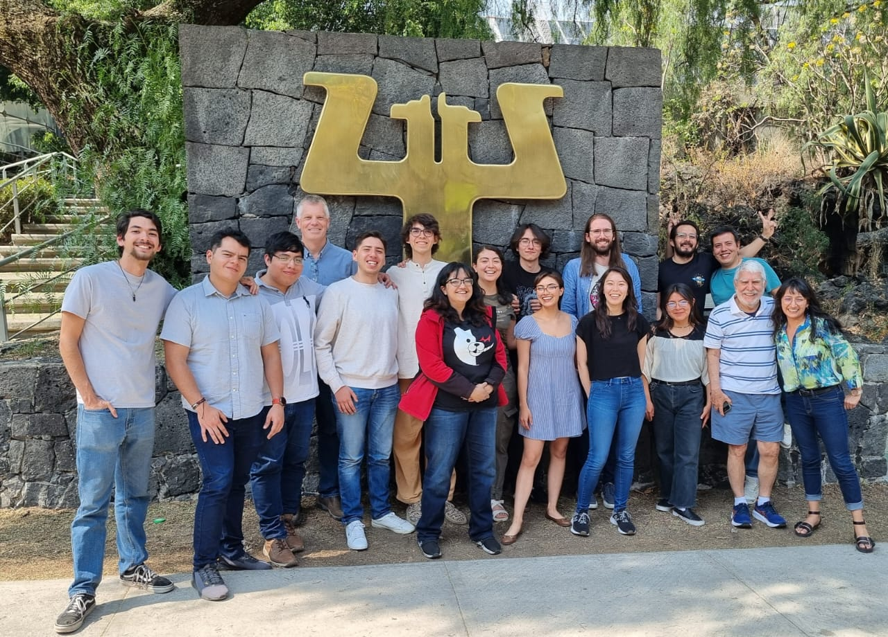

Acerca del Instructor
Christian Badiillo es egresado de la Facultad de Psicología, UNAM con apasionado interés por el estudio del comportamiento humano su modelamiento computacional y el análisis estadístico bayesiano de datos. Actualmente es miembro del Lab25 “Aprendizaje y Comportamiento Adaptable” de la Facultad de Psicología, UNAM donde se dedica a la investigación en el campo del modelamiento computacional del comportamiento y su intersección con la inteligencia artificial.
Educación
Facultad de Psicología UNAM | Ciudad de México, México Licenciatura en Psicología | Ago 2019 - Ago 2023
Experiencia
Instituto de Investigaciones en Matemáticas Aplicadas y en Sistemas (IIMAS), UNAM | Especialidad en Estadística Aplicada | Ago 2024 - presente
Instituto de Investigaciones en Matemáticas Aplicadas y en Sistemas (IIMAS), UNAM | Servicio Social - Desarrollo de sistemas inteligentes usando deep learning | Feb 2024 - Ago 2024
Facultad de Psicología, UNAM | Impartición de Curso Intersemestral - Ciencia de Datos con Python: de Estadística Descriptiva a Redes Neuronales | Periodo 2024-2
Facultad de Psicología, UNAM | Impartición de Curso Intersemestral - Temas Selectos en Estadística | Periodo 2024-1
UNAM | Curso de Verano - Macroentrenamiento en Inteligencia Artificial (MeIA) 2023. | Jun 2023
Neuromatch Academy | Curso de Verano - NMA Computational Neuroscience | Jul 2022
Acerca del Lab 25
